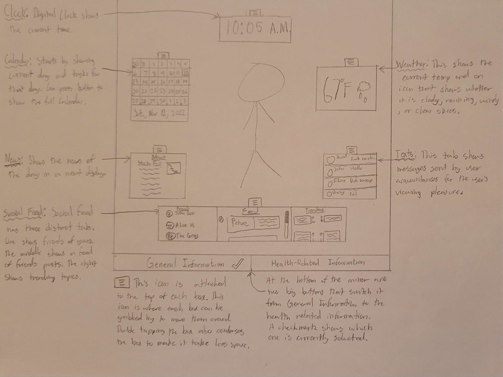
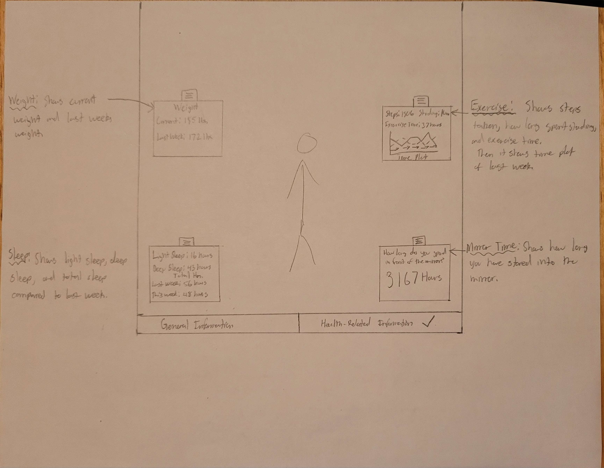

Grade C Requirements
Provided Sketch of the interface:


Provided all necessary information.
Current time is displayed in the top center.
The General Information and Health-Related Information pulls data from csv files and feeds them to objects to display.
All necessary information is displayed.
Grade B and A Requirements
Implemention of Sketch in p5.js:
The sketch in p5.js is unfortunately different from drawn sketch as the drawn sketch was very complicated.
General Information performs like described above.
Health-realated Information performs like described above.
Regarding the A Requirements the smart mirror has the "advanced" feature of being able to move the information provided on the mirror.